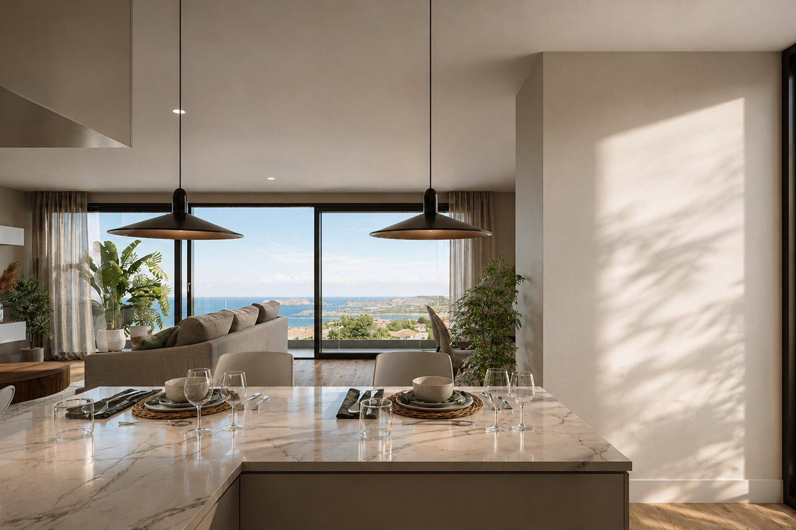
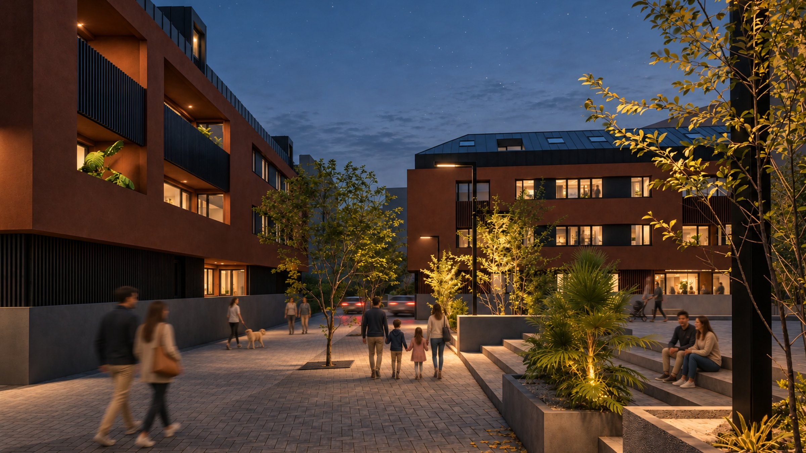

(Services)
What I do
 ExteriorsImages that place the building in its real context — light, vegetation, scale and street — before a single brick is laid.
ExteriorsImages that place the building in its real context — light, vegetation, scale and street — before a single brick is laid.- Photorealistic stills for print and web
- Day, dusk or night scenes
- Photo-integration into the real site
- Landscape, vegetation and people at the right scale

InteriorsFurnished, lit and styled spaces that let your client understand — and approve — an interior before anything is bought or built.- Furnished rooms with honest materials
- Daylight and artificial lighting scenarios
- Material and furniture alternatives
- Close-up views of the finishes

AnimationWalkthroughs and flythroughs that show a building in motion, with calm camera work that follows the way people will actually move through it.- Full HD walkthroughs and flythroughs
- Calm, deliberate camera moves
- Day-to-dusk transitions
- Titles and your music, if you provide them
 Sales materialColour floor plans, infographics and assets that turn a development into something easy to understand, present and sell.
Sales materialColour floor plans, infographics and assets that turn a development into something easy to understand, present and sell.- Colour floor plans and unit plans
- Infographics with areas, orientation and amenities
- Artwork for site hoardings and brochures
- Assets for property portals and promotion websites
Have a project in mind?
Let’s talk →